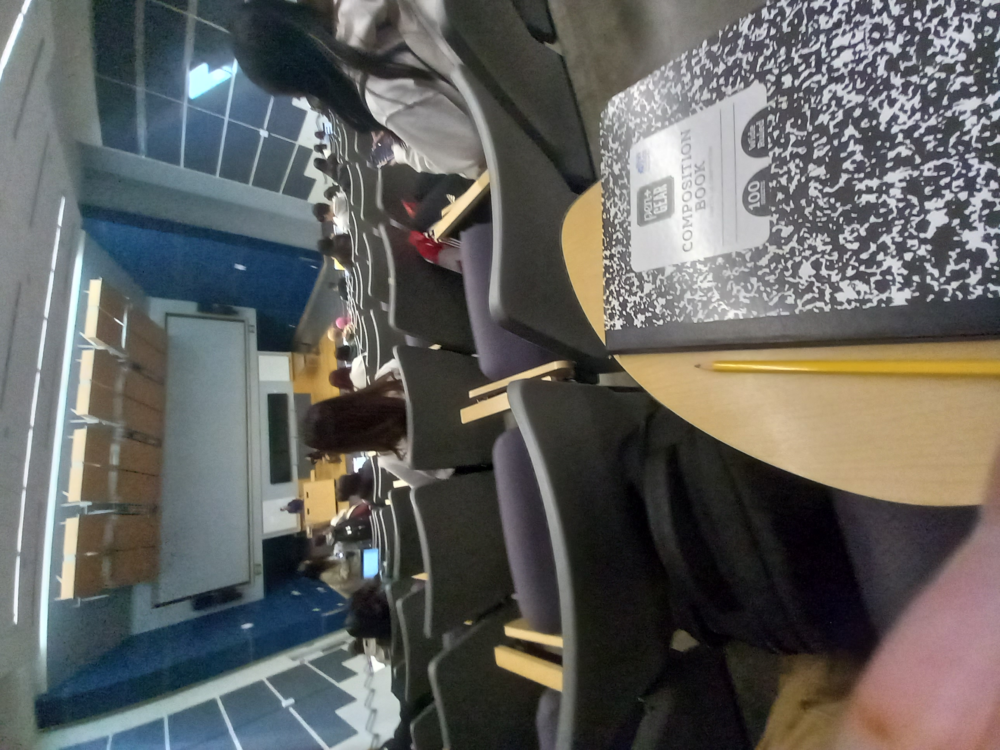
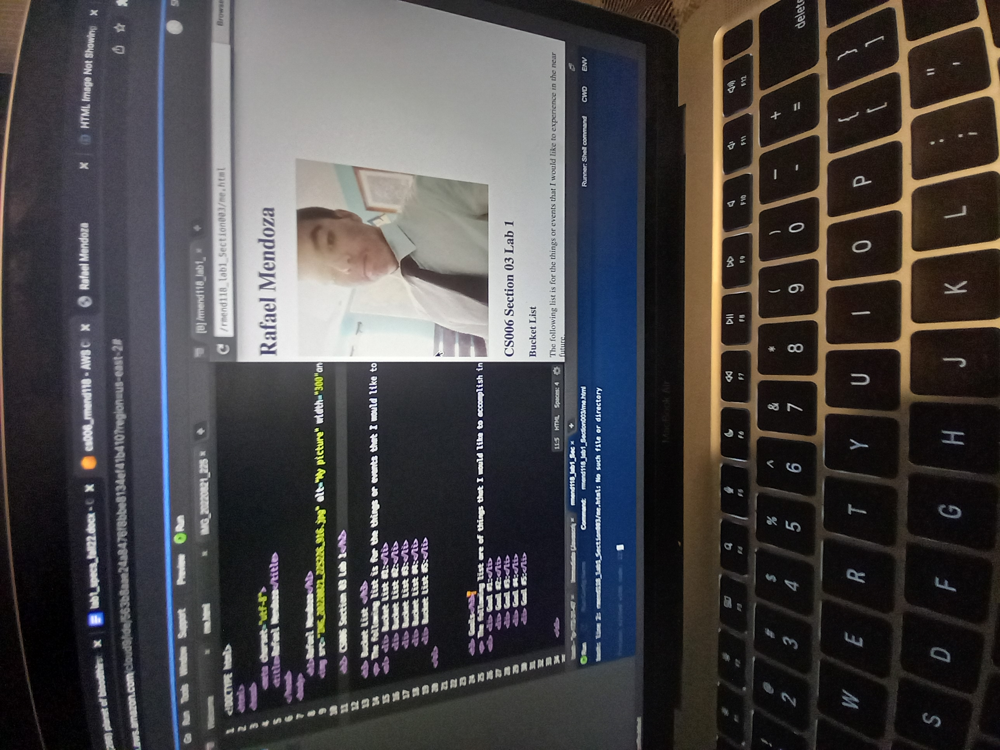

Rafael Mendoza
My name is Rafael Mendoza, I am a current Undergraduate at the University of California, Riverside at the Political Science Department, seeking to obtain my BA in Political Science and Adminstrative Studies. I was Born in Indio, California on October 21,2004, and graduated from High School at West Shores High School in Salton city California.
Since I was little I had always been intrested on learning understanding the world around us. The way money works and how our government operates and how those two different instituions have developed over time. Why such instituions are highly imperative for society as a whole to function. I was able to receive some first hand experince while being in High School and how do develop the skills necessary to engage in economic practices and political speech to influence economic policy or plans.The modern job market is demanding for indivduals that have these set of skills, as companies and corporations want to better understand the linkage between economics and government. Someone who can advise policy decions and mange programs while understanding the political ramifications of doing such actions. That is exactly where I come in. As a current student here at UCR I seek to improve my skills in political economy and in adminstration. My real journey shall begin in 2026 when my graduation from UCR shall further allow me to access careers of these related skills.As a Political Economist I will be able to advise and calcuate the economic effects that certain politcal movements or decisons. Anaylze these effects and come up with the best possible outcomes. I have already been able to test this in a very limited way to assiting student government as ASB treasurer.
My experience has developed over the years and is at the current moment limited to just college courses and High school student government. This website will be updated as more and more experience is collected and developed.For any questions or concerns regarding this resume or for me, all of my contact and social media information is available below.
Experience
Student
• Developed websites for my College courses
• Learning and Practicing IPE ( International Political Economy)
• Experience with HTML, CSS and AWS
ASB Treasurer
• Responsible for Addressing the flow of money and managing school events.
• Management of ExtracurricularEvents
High School Teacher Assistant
• Help students learn how to Understand Economic Policy
• Assit in grading simple assignments
Education
West Shores High School
University of California Riverside
Portfolio


.jpg)